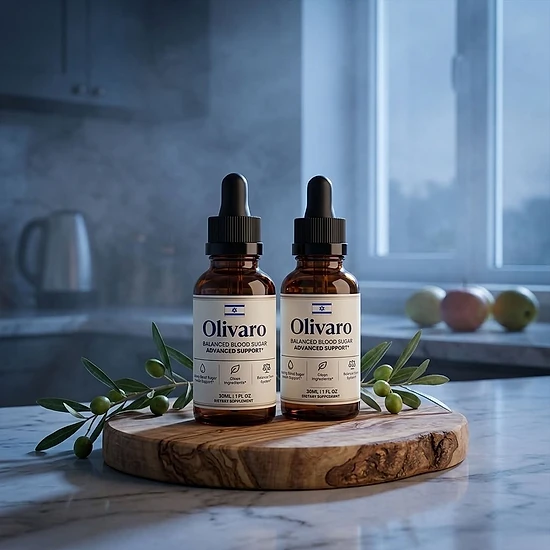

What Is Olivaro And How Does It Work?
Lately, a small dropper bottle called Olivaro has been getting attention among people who watch their glucose. It is a liquid dietary supplement, swallowed by mouth, created to deliver nutritional support for healthy blood sugar, glucose metabolism, and daily energy. Its front label reads "Balanced Blood Sugar Advanced Support", and the target audience is adults who prefer an uncomplicated daily habit.
The official website explains the idea behind the formula as a combination of trace minerals and botanical extracts covering three goals. For insulin response, it relies on Chromium Picolinate. For sugar absorption, it uses Gymnema Leaf and African Mango. For fatigue and oxidative stress, it adds two adaptogens, Panax Ginseng and Maca.
On the Supplement Facts panel you will find chromium plus a 200 mg proprietary blend of more than twenty herbs and amino acids, including Grape Seed, Green Tea, Guarana, Eleuthero, Astragalus, and L-Carnitine.
Nothing here is pitched as instant. Olivaro is described as steady, daily nutritional support that complements good food choices, exercise, and rest, so that energy and glucose levels stay balanced through the day.
The official website lists further goals too: healthy insulin function, carbohydrate metabolism, and weight management. Outcomes depend on the individual.
The bottle holds 30 ml (1 fl oz), or 30 servings of 1 ml, which makes it a practical choice for anyone tired of pills.
Per the label, Olivaro is made in the USA, using ingredients sourced worldwide, inside an FDA-registered facility, while the official website shows GMP and non-GMO seals. The product is not intended to diagnose, treat, cure, or prevent any disease, and it should never replace prescribed medication.
Olivaro Ingredients
So what goes inside a dropper of Olivaro? The Supplement Facts panel lists chromium (as chromium picolinate), 0.7 mcg per 1 ml serving, together with a 200 mg proprietary blend. These six are the ones the official website highlights:
Chromium Picolinate: A mineral included to support insulin response, helping glucose reach the cells.
Gymnema Leaf Extract: Long used in Ayurveda, included to support healthy sugar absorption and reduce sugar cravings.
African Mango Seed Extract: Included to support metabolism of carbohydrates and fats.
Green Tea Leaf Extract: A catechin-rich leaf included to support insulin sensitivity and metabolism.
Maca Root Extract: An adaptogenic root included to support daily energy and stress balance.
Panax Ginseng Aerial Extract: Included to support glucose uptake and overall vitality.
Also in the blend: Eleuthero, Astragalus, Guarana, Grape Seed, Capsicum, Grapefruit, Coleus Forskohlii, Raspberry Ketones, L-Arginine, L-Tyrosine, L-Glutamine, Beta-Alanine, GABA, Monoammonium Glycyrrhizinate, L-Ornithine, L-Tryptophan, and L-Carnitine. Individual doses are not disclosed.
Inactive ingredients include glycerin, purified water, xylitol, citric acid, stevia, organic lemon extract, potassium sorbate, sodium benzoate, and natural flavors.
Olivaro Side Effects
Safety is the first question many readers ask. The official website describes Olivaro as built on naturally derived ingredients for adults who want a simple liquid that supports stable energy and healthy glucose levels. That does not mean it fits everyone, and both the label and the website include warnings.
In its FAQ, the brand calls Olivaro an active, stimulating supplement. Guarana, which naturally contains caffeine, and green tea are part of the blend, so caffeine-sensitive people should take note. Anyone younger than 18, or living with pre-existing health conditions, particularly heart problems or high blood pressure, is advised by the official website to speak with a healthcare professional first.
The label adds that pregnant or nursing women, children under 18, and people with a known medical condition should consult a physician before use. If you take prescription medicines, including blood sugar medication, check with your doctor, since this formula targets glucose metabolism. Never exceed the recommended dose, and skip any bottle with a broken or missing safety seal.
The label confirms that Olivaro is made in the USA in an FDA-registered facility. It is not intended to diagnose, treat, cure, or prevent any disease and cannot replace medical care. If something feels off, stop and consult a healthcare professional. Experiences vary between users.
Olivaro Dosage
Using Olivaro takes only seconds. Following the label, shake the bottle well, then take 1 to 2 full droppers each day, releasing the liquid into your mouth and swallowing it. There is nothing to dissolve or mix.
The official website suggests taking it in the morning, preferably before a meal. Choosing the same time every day makes the routine stick and keeps the nutritional support consistent.
The container holds 30 ml (1 fl oz), with a 1 ml serving size and 30 servings, according to the Supplement Facts panel. The official website explains that the formula is built to work with consistent use over time, which is why many buyers plan ahead for more than one month.
No complicated schedule is involved. A single daily serving fits alongside a balanced diet, physical activity, and quality sleep.
Like every supplement, Olivaro should not be taken above the dose on the label. Store it somewhere cool and dry, away from humidity, heat, and light, and keep it out of the reach of children. Consistent daily use and healthy habits give it the best chance.
Olivaro – Refund Policy
Buying Olivaro includes a 60-day Results or Refund Guarantee, counted from the purchase date, according to the official website. After using it for at least 30 days, if you are not entirely happy with the results, the product, or your experience, the support team will help you.
The official returns page states that refund requests are accepted within 60 days of the original purchase. It advises confirming your delivery date through the carrier's tracking page to be sure you are inside that window.
How to start a refund: write to customer support with "Refund Request" as the subject line and explain that you are not fully convinced by the product. The team then replies with instructions to complete the return.
Support contacts: the label lists contact@customercs.com and +1 (507) 448-8190, and the official order page lists +1 (855) 889-3137.
When the money returns: after the request is approved and all requirements are met, the refund is processed, and it may take a few business days to appear on the original payment method, depending on your bank or card issuer.
The complete refund policy is published on the official website, so reading it carefully before ordering Olivaro is a good idea.
Olivaro Customer Reviews
-
 Michael Thompson — Houston, TexasVerified Purchase – 6 Bottles
Michael Thompson — Houston, TexasVerified Purchase – 6 Bottles
“If it wasn't for Olivaro, I'd still be struggling with my blood sugar levels… But thank goodness I didn't have to do any of that, because just two weeks into taking Olivaro, I began to see my glucose readings stabilize and my energy levels soar.”
-
 Sarah Rodriguez — Chicago, IllinoisVerified Purchase – 6 Bottles
Sarah Rodriguez — Chicago, IllinoisVerified Purchase – 6 Bottles
“I was totally discouraged… dealing with constant blood sugar spikes and feeling tired all the time. It got to the point where I was afraid to enjoy a meal. But then I started on Olivaro, and day by day, my glucose levels became more balanced... I even noticed my cravings diminishing, without those sudden urges for sweets… And I swear, it felt like I regained control of my health in just 3 weeks!”
-
 Lauren Rio — Seattle, WashingtonVerified Purchase – 6 Bottles
Lauren Rio — Seattle, WashingtonVerified Purchase – 6 Bottles
“I was about to give up on finding something that actually worked… and then Olivaro showed up... Oh, what a relief!!! My blood sugar readings are now consistently in the healthy range, and I feel so much more energetic. I can hardly believe it, it's truly life-changing.”
Olivaro – Where To Buy
To get genuine Olivaro, the official website, theolivaro.com, is the source to use. Orders go through the official order page, and the official website does not point buyers to Walmart, eBay, Amazon, or any other marketplace.
Listings from unknown sellers may look convincing, but nobody can confirm how those bottles were stored or where they came from, which creates doubts about quality, freshness, and safety, especially for a liquid. A product bought elsewhere may not qualify for the 60-day guarantee.
This is why most buyers stick with the official website when ordering Olivaro. Buying direct means you get the authentic original product, made in the USA, plus customer support and the full guarantee. According to the official FAQ, every order is a one-time payment with no auto-ship and no hidden fees.
Just before checkout, double-check that you are on the official Olivaro website to stay clear of counterfeit or expired batches.
To ensure you’re getting the authentic product, most users choose to visit the official website.
Is Olivaro A Scam?
Based on what the label and the official website reveal, Olivaro does not appear to be a scam. It is a real liquid supplement, sold through an established retailer and formulated to offer nutritional support for healthy blood sugar levels and glucose metabolism with consistent use.
Its Supplement Facts panel shows chromium and a 200 mg blend with African Mango, Gymnema, Green Tea, Maca, and Panax Ginseng, ingredients familiar to anyone who follows natural wellness. Every ingredient is named, though the amounts inside the blend are not revealed.
The label names the distributor, Instituto Experience, based in Lakeland, Florida, with a phone line and support email, and it confirms US manufacturing in an FDA-registered facility.
A few things are worth weighing. The formula includes guarana, the official website calls it stimulating, and the order page shows a countdown clock and limited-stock alerts. Results are individual, and no supplement can guarantee an outcome or replace medical treatment.
Every order is backed by a 60-day Results or Refund Guarantee, and the official website says purchases are one-time, without auto-ship or hidden fees.
For adults looking for a convenient daily liquid to support healthy blood sugar levels and steady energy, Olivaro is a fair option, ideally purchased from the official website and reviewed with a doctor if you use medication.
For those who want to verify product details or check current availability, the official Olivaro website remains the safest option.

Check Availability On Official Website